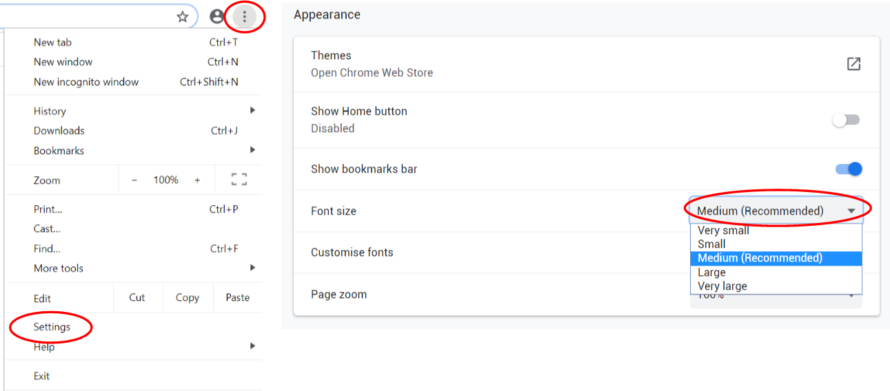
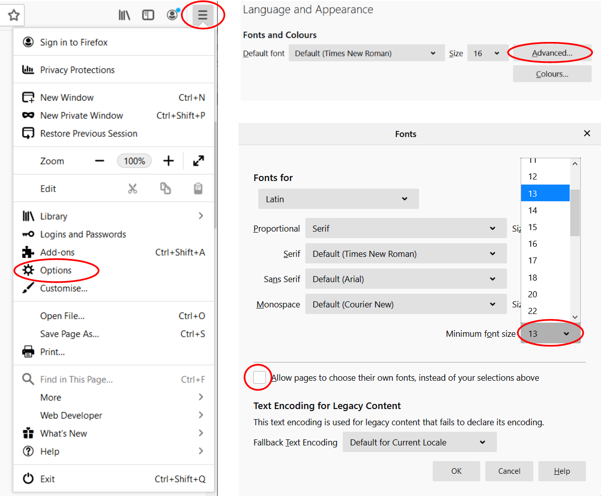
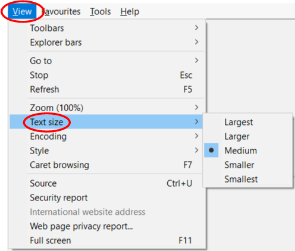
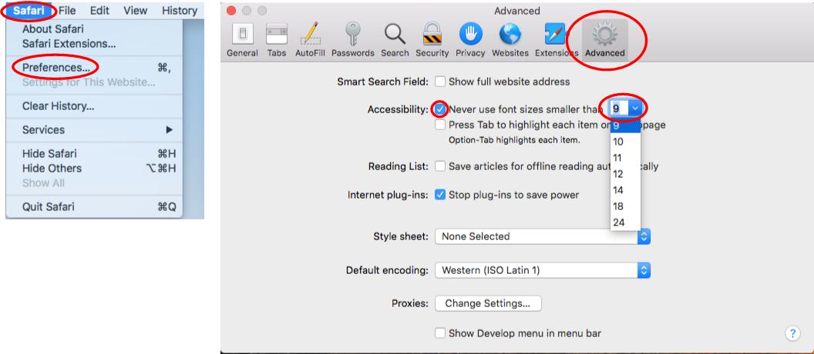

Adjustments
Web pages can be adjusted by users in a number of ways to make them easier to access. Listed below are a number of in built tools and accessibility extensions that can be used to adjust websites to meet individual needs better. Difficulties users may encounter when adjusting websites are also discussed.
Zoom
Zooming in enlarges all of the content on the web page. In Windows, using Chrome, Firefox, Edge or Internet Explorer, press on the CTRL & + keys to zoom in and the CTRL & - keys to zoom out. On the Mac, using Safari press the COMMAND & + or - keys to change the zoom level. On badly designed websites, zooming in can cause some content to be lost. See section below on responsive websites.
Text Size
The text size can be enlarged, without enlarging any of the other elements on the page. Sometimes this may provide a better user experience, if zooming in causes content to become difficult to read or navigate. Methods for changing the text size differ from browser to browser. Font sizes can be changed in the standard view in Chrome, Firefox, Internet Explorer and Safari. In Edge to change the font size, users need to change the view to Reading View. Reading View in Edge is not yet covered by AccessiblityWeb.
Chrome Text Size
To change the text size in Chrome, go the more button (...) in the top right hand corner of the Chrome browser (or press and release the ALT key, then press the ENTER key), and choose settings from the menu. In the setting page, scroll or tab down to the appearance section and change the font size as needed in the font size drop down menu.
Firefox Text Size
To change the font size in Firefox, go to the more button on the top right of the browser (a ‘hamburger’ button with three horizontal lines). Then select 'Options' from the menu that appears. Alternatively press and releasing the ALT key, then press the T key, and then the O key will open the options menu. Use the TAB key or scroll down to get to the ‘Language and Appearance’ section and activate the ‘Advanced’ button, which opens the font window. In the font window, first uncheck the ‘Allow pages to choose their own fonts, instead of your selections above’. Then click or SHIFT & TAB up to the ‘Minimum font size’ drop down menu and select a desired minimum font size.
Internet Explorer Text Size
In Internet Explorer, to change the text size, first open the view menu by pressing the ALT + V key. Then either click on the ‘Text Size’ item or use the DOWN ARROW keys and press the ENTER key on ‘Text Size’. From there, click on the desired text size or navigate the text size options using the DOWN ARROW keys and press ENTER on the desired text size.
Safari Text Size
To change the minimum font size in Safari, click in the Safari menu at the top left of the screen, or open the Safari menu by pressing Fn CTRL F2 or CTRL F2. In the Safari menu, click on preferences, or use the DOWN ARROW keys to get to preferences and press ENTER. Click on the advanced tab, or use the TAB key to get to advanced and press the SPACE key. Then check the ‘Never use font sizes smaller than’ checkbox by clicking on the checkbox, or using the TAB key to get to the checkbox and pressing SPACE. Then in the drop down menu select a minimum font size, which can be done either by using the mouse, or using the TAB key to get to the drop down menu and using the UP & DOWN ARROW keys to change the value.
Responsive Websites
When changing the zoom or text size, users may find that some content is lost, becomes unreadable or does not change in size as expected. A responsive website is a site where users can both change the text size and the content is still accessible, within certain limitations, regardless of the size of browser window (viewport) and the user's zoom and text size preferences. What this means in practice is that all of the content should remain visible regardless of the viewport or zoom and text settings. In addition, content should generally ‘reflow’ as the viewport gets narrower. The user should not have to scroll to the left or the right hand side of the page if the zoom settings have been changed. Ideally, elements that can be side by side on a wider viewport, will end up one above the other on a narrower viewport or when the zoom is changed. The AccessibilityWeb website, with a deliberate exception in a small section of this page, is designed to reflow. For example, as the page becomes narrower or is zoomed in, the menu at the top is replace by a button with a menu with the page headings, and the page contents section, used to aid navigation in the page, disappears. Unfortunately, not all websites are designed to reflow properly. In the grey box immediately beneath this paragraph is an example of bad design that does not respond well when the zoom is increased or the page size is narrowed.
Text Not Resizing: In this section, only some of the text will change size when the user changes the font size (check section above to see how to change font size, not zoom).
Overlapping and Overspilling: The text in this section will start to overlap other sections and content on the right hand side will not be visible as the zoom is increased. Press the CTRL & + keys on your browser or COMMAND & + keys if using Safari on Mac to zoom in and see what happens.
Extensions
An extension is a piece of software that can be added to the browser which means the browser can do more things. There are a range of accessibility extensions that can change how web pages are displayed as well as adding extra functionality, such as reading aloud the content. Below are some links to extensions for the Chrome, Firefox and Edge browsers. Please note that AccessiblityWeb takes no responsibility for any harm caused by installing these extensions. Installing any extensions listed in the links below is entirely at the user’s own risk.
Chrome ExtensionsEdge Extensions
Firefox Extensions